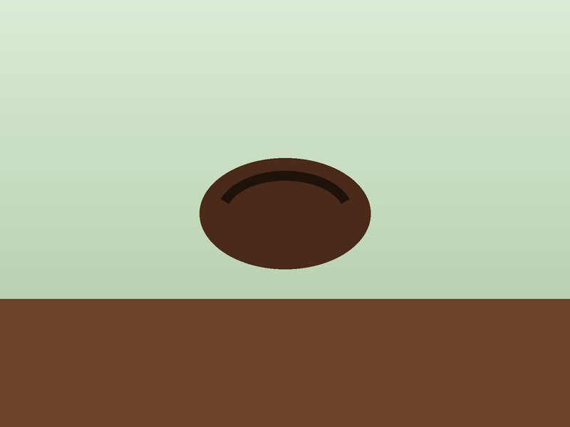
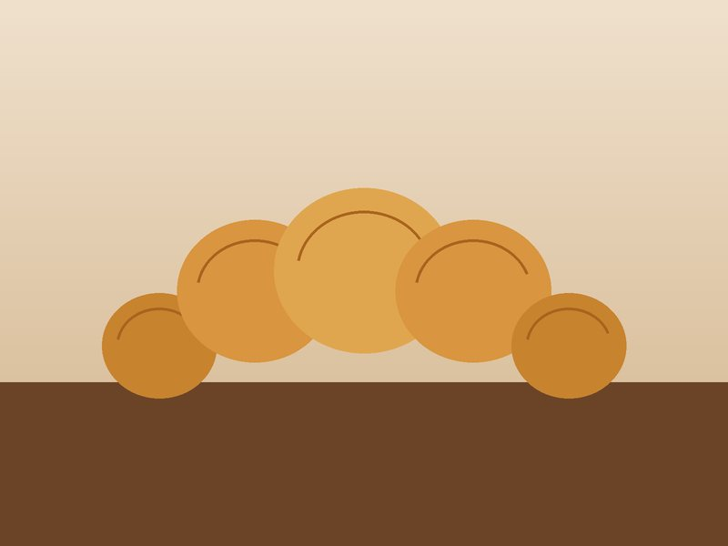
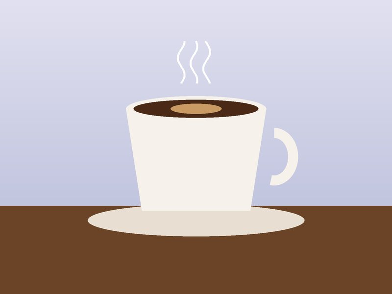

Robusta và Arabica khác nhau thế nào?
Arabica thường thơm, chua nhẹ. Robusta đậm, đắng và nhiều caffeine hơn. Phần lớn cà phê phin Việt Nam dùng Robusta.
Trang chủ / Góc chia sẻ
Những điều nhỏ về cà phê và bánh mà chúng tôi học được sau mỗi ngày đứng quầy.

Arabica thường thơm, chua nhẹ. Robusta đậm, đắng và nhiều caffeine hơn. Phần lớn cà phê phin Việt Nam dùng Robusta.

Bột bơ nhiều lớp cần ủ lạnh qua đêm rồi nướng ngay. Để lâu, các lớp sẽ mất độ giòn.

Cân điện tử, phễu lọc và ấm có nhiệt kế là đủ. Nước khoảng 92–96 °C cho hạt rang vừa.

Cold brew ủ lạnh nhiều giờ nên ít chua và êm hơn. Cà phê đá là cà phê pha nóng rồi làm lạnh.